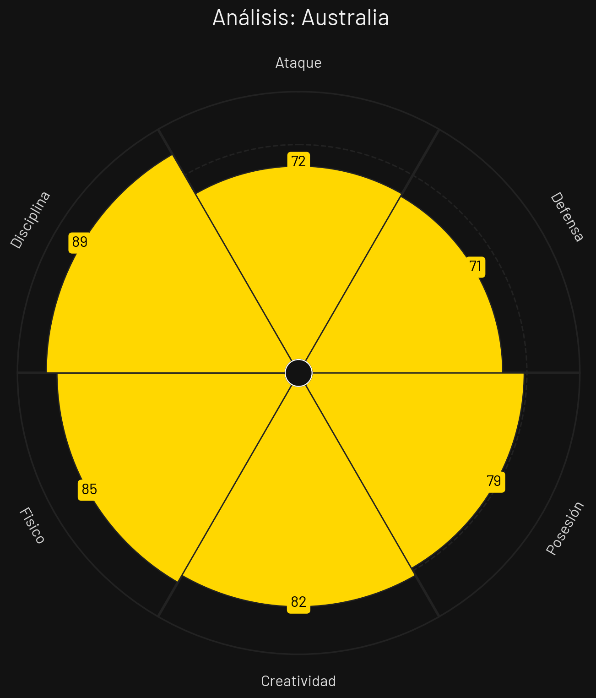
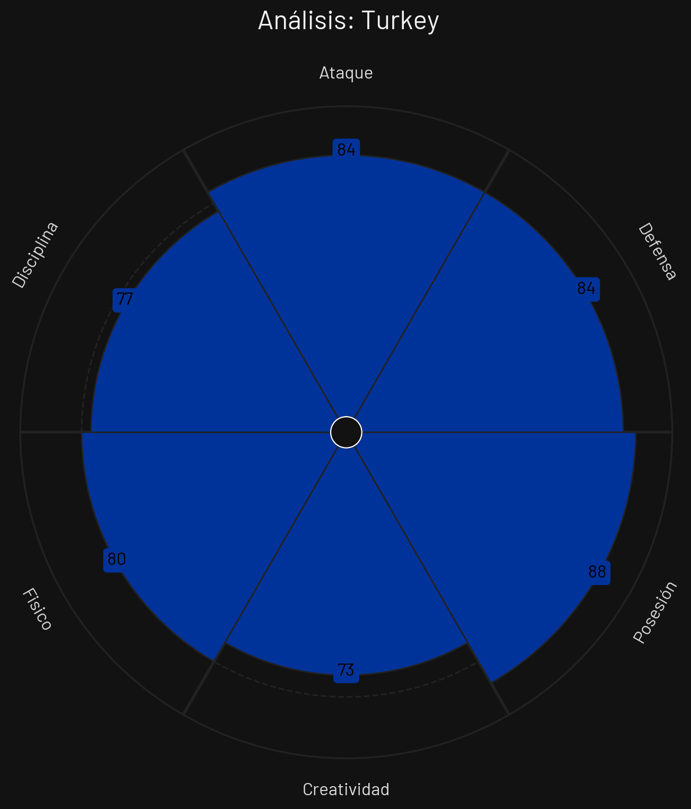

🇦🇺 Australia: Análisis Táctico
Ventajas
- Disciplina Colectiva y Orden: Australia destaca por su bloque defensivo sumamente maduro. El orden táctico y la resistencia física son sus pilares, limitando los espacios para el rival.
- Fortaleza Física e Intercepciones: Son dominantes en el juego aéreo y en los balones divididos, cortando los ataques del adversario en la frontal del área.
- Transiciones Simples: Juego directo buscando segundas jugadas cerca del área contraria.
Desventajas
- Falta de Pegada y Volumen Creativo: Les cuesta generar volumen de peligro (xT) constante en el área rival, dependiendo en exceso de la táctica fija.
🇹🇷 Turquía: Análisis Táctico
Ventajas
- Control del Ritmo y Calidad Técnica: Cuenta con centrocampistas asociativos capaces de dominar el balón y dictar el tempo del partido.
- Creatividad y Desequilibrio en Tres Cuartos: Jugadores desequilibrantes en ataque que pueden filtrar pases y buscar remates lejanos con gran acierto.
- Organización en Salida de Balón: Distribución de juego muy coordinada desde la primera línea.
Desventajas
- Vulnerabilidad Defensiva ante Repliegue Rápido: Si se vuelcan al ataque y pierden el esférico, sufren ante contraataques veloces.
⚔️ ¿Cómo puede superar cada equipo a su adversario?
¿Qué debe hacer Australia para ganarle a Turquía?
1. Mantener la disciplina posicional: Evitar cometer faltas tácticas cerca de su propia área.
2. Explotar las segundas jugadas: Ganar el rebote tras envíos largos para pillar desordenada a la defensa turca.
¿Qué debe hacer Turquía para ganarle a Australia?
1. Circular rápido e interiorizar el juego: Mover el balón en horizontal para cansar el bloque australiano y buscar desmarques de ruptura interiores.
2. Disparar desde media distancia: Forzar la salida de los centrales australianos ensanchando el tiro exterior.
🏆 Pronóstico: ¿Quién ganaría?
> Predicción: Empate 1-1 (con ligera ventaja para Turquía).
El modelo Poisson bivariado otorga a Turquía un 38% de probabilidad de victoria, frente al 30% de Australia y un 32% de empate. La muralla colectiva de Australia y la calidad turca neutralizarán sus fuerzas en un disputado 1-1.
📊 Pizarras y Gráficos Tácticos
Perfil Táctico (Australia)

Perfil Táctico (Turquía)
